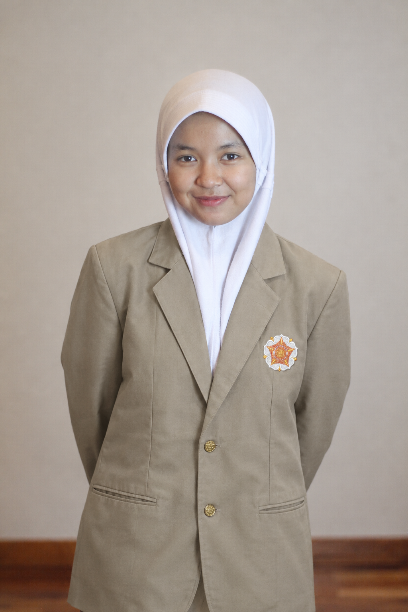

PERGURUAN TINGGI
Universitas Gadjah Mada
2026 – sekarang
Program Studi Teknologi Rekayasa Elektro, Sekolah Vokasi
Mahasiswa Teknologi Rekayasa Elektro UGM yang terus mengeksplorasi teknologi dan mengembangkan potensi diri.

Mengenal sedikit tentang saya.
Dalam perkuliahan, berfokus untuk memperdalam dasar-dasar ilmu elektro, sebagai fondasi untuk memahami berbagai penerapan teknologi.
Ke depannya, ingin terus mengembangkan diri, memperluas wawasan, dan mengeksplorasi keterkaitan ilmu elektro dengan berbagai bidang teknologi lainnya.
Tempat belajar dan bertumbuh.
2026 – sekarang
Program Studi Teknologi Rekayasa Elektro, Sekolah Vokasi
2023 – 2026
Ilmu Pengetahuan Alam
Beberapa kemampuan yang dimiliki dan ingin terus kembangkan.
Pengalaman yang menjadi bagian dari proses belajarku.
2024-2026
Menjalankan tanggung jawab sebagai bendahara selama dua periode berturut-turut, mengelola kas rutin lebih dari 40 anggota, mencatat transaksi keuangan berbagai program kerja, serta mengarsipkan bukti transaksi untuk transparansi keuangan.
2024-2025
Mengelola pencatatan kehadiran harian dan kebutuhan administrasi 37 penghuni asrama, menangani surat-menyurat dan dokumen resmi, serta berkoordinasi dengan para pembina dalam pelaksanaan kegiatan program.
2024-2025
Bertanggung jawab mengelola anggaran operasional sebesar Rp50 juta serta mengoordinasikan perencanaan keuangan untuk mendukung penyelenggaraan festival dan kompetisi tahunan yayasan yang diikuti lebih dari 1.000 peserta.